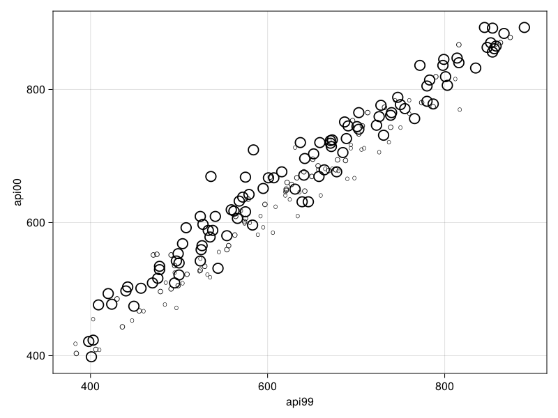

Survey
This package is the Julia implementation of the Survey package in R developed by Professor Thomas Lumley.
The need for moving the code to Julia.
At xKDR we processed millions of records from household surveys using the survey package in R. This process took hours of computing time. By implementing the code in Julia, we are able to do the processing in seconds. In this package we have implemented the functions svymean, svyquantile and svysum. We have kept the syntax between the two packages similar so that we can easily move our existing code to the new language.
Documentation for Survey.
Survey.svydesign — TypeThe svydesign object combines a data frame and all the survey design information needed to analyse it.
julia> using Survey;
julia> apiclus1 = load_data("apiclus1");
julia> dclus1 = svydesign(id= :dnum, weights= :pw, data = apiclus1, fpc= :fpc) |> print
Survey Design:
variables: 183x45 DataFrame
id: dnum
strata: 1, 1, 1 ... (length = 183)
probs: 0.029544719150814778, 0.029544719150814778, 0.029544719150814778 ... (length = 183)
fpc:
popsize: 757, 757, 757 ... (length = 183)
sampsize: 183, 183, 183 ... (length = 183)
nest: false
check_strat: trueSurvey.svyglm — Typesvyglm(formula, design, dist, link)The svyglm function can be used to fit glms on svydesign.
julia> using Survey
julia> apiclus1 = load_data("apiclus1");
julia> dclus1 = svydesign(id=:dnum, weights=:pw, data = apiclus1);
julia> svyglm(@formula(ell~meals),dclus1,Normal(),IdentityLink())
Survey.colnames — Methodcolnames(design)Get the column names of a survey design.
julia> using Survey
julia> apistrat = load_data("apistrat");
julia> dstrat = svydesign(data = apistrat, id = :1, strata = :stype, weights = :pw, fpc = :fpc);
julia> colnames(dstrat)
45-element Vector{String}:
"Column1"
"cds"
"stype"
"name"
"sname"
"snum"
"dname"
"dnum"
"cname"
"cnum"
⋮
"enroll"
"api.stu"
"pw"
"fpc"
"probs"
"weights"
"popsize"
"sampsize"
"strata"Survey.dim — Methoddim(design)Get the dimensions of a survey design.
julia> using Survey
julia> apistrat = load_data("apistrat");
julia> dstrat = svydesign(data = apistrat, id = :1, strata = :stype, weights = :pw, fpc = :fpc);
julia> dim(dstrat)
(200, 45)Survey.dimnames — Methoddimnames(design)Get the names of the rows and columns of a survey design.
julia> using Survey
julia> apistrat = load_data("apistrat");
julia> dstrat = svydesign(data = apistrat, id = :1, strata = :stype, weights = :pw, fpc = :fpc);
julia> dimnames(dstrat)
2-element Vector{Vector{String}}:
["1", "2", "3", "4", "5", "6", "7", "8", "9", "10" … "191", "192", "193", "194", "195", "196", "197", "198", "199", "200"]
["Column1", "cds", "stype", "name", "sname", "snum", "dname", "dnum", "cname", "cnum" … "emer", "enroll", "api.stu", "pw", "fpc", "probs", "weights", "popsize", "sampsize", "strata"]Survey.freedman_diaconis — Methodfreedman_diaconis(v::AbstractVector)Calculate the number of bins to use in a histogram using the Freedman-Diaconis rule.
Examples
julia> freedman_diaconis([10, 20, 30, 40, 50])
2Survey.freedman_diaconis — Methodfreedman_diaconis(df::DataFrame, var::Symbol)Calculate the number of bins for a DataFrame variable.
Examples
julia> using DataFrames
julia> df = DataFrame((a=[1, 2, 3, 4, 5], b=[10, 20, 30, 40, 50]));
julia> freedman_diaconis(df, :b)
2Survey.freedman_diaconis — Methodfreedman_diaconis(design::svydesign, var::Symbol)Calculate the number of bins for a survey design variable.
Examples
julia> apistrat = load_data("apistrat");
julia> dstrat = svydesign(data = apistrat, id = :1, strata = :stype, weights = :pw, fpc = :fpc);
julia> freedman_diaconis(dstrat, :enroll)
15Survey.load_data — MethodThe Academic Performance Index is computed for all California schools based on standardised testing of students. The data sets contain information for all schools with at least 100 students and for various probability samples of the data.
Use load_data(name) to load API data, with name ∈ ["apiclus1", "apiclus2", "apipop", "apistrat", "apisrs"] being the name of the dataset.
df = load_data("apiclus1")Details about the columns of the dataset can be found here: https://r-survey.r-forge.r-project.org/survey/html/api.html
The API program has been discontinued at the end of 2018. Information is archived at https: //www.cde.ca.gov/re/pr/api.asp
Survey.sturges — Methodsturges(df::DataFrame, var::Symbol)Calculate the number of bins for a DataFrame variable.
Examples
julia> using DataFrames
julia> df = DataFrame((a=[1, 2, 3, 4, 5], b=[10, 20, 30, 40, 50]))
5×2 DataFrame
Row │ a b
│ Int64 Int64
─────┼──────────────
1 │ 1 10
2 │ 2 20
3 │ 3 30
4 │ 4 40
5 │ 5 50
julia> sturges(df, :b)
4Survey.sturges — Methodsturges(v)Calculate the number of bins to use in a histogram using the Sturges rule.
Examples
julia> sturges(10)
5
julia> sturges([10, 20, 30, 40, 50])
4Survey.sturges — Methodsturges(design::svydesign, var::Symbol)Calculate the number of bins for a survey design variable.
Examples
julia> apistrat = load_data("apistrat");
julia> dstrat = svydesign(data = apistrat, id = :1, strata = :stype, weights = :pw, fpc = :fpc);
julia> sturges(dstrat, :enroll)
9Survey.svyboxplot — Method svyboxplot(design, x, y; kwargs...)Box plot of survey design variable y grouped by column x.
Weights can be specified by a Symbol using the keyword argument weights.
The keyword arguments are all the arguments that can be passed to mapping in AlgebraOfGraphics.
julia> using survey
julia> data(api);
julia> dstrat = svydesign(data = apistrat, id = :1, strata = :stype, weights = :pw, fpc = :fpc);
julia> bp = svyboxplot(dstrat, :stype, :enroll; weights = :pw)
Survey.svyhist — Functionsvyhist(design, var, bins = freedman_diaconis; normalization = :density, weights = ones(size(design.variables, 1), ...)Histogram plot of a survey design variable given by var.
bins can be an Integer specifying the number of equal-width bins, an AbstractVector specifying the bins intervals, or a Function specifying the function used for calculating the number of bins. The possible functions are sturges and freedman_diaconis.
The normalization can be set to :none, :density, :probability or :pdf. See Makie.hist for more information.
The weights argument can be an AbstractVector or a Symbol specifying a design variable.
For the complete argument list see Makie.hist.
julia> using Survey
julia> apistrat = load_data("apistrat");
julia> dstrat = svydesign(data = apistrat, id = :1, strata = :stype, weights = :pw, fpc = :fpc);
julia> h = svyhist(dstrat, :enroll)
Survey.svyplot — Method svyplot(design, x, y; kwargs...)Scatter plot of survey design variables x and y.
The plot takes into account the frequency weights specified by the user in the design.
julia> using Survey
julia> apistrat = load_data("apistrat");
julia> dstrat = svydesign(data = apistrat, id = :1, strata = :stype, weights = :pw, fpc = :fpc);
julia> s = svyplot(dstrat, :api99, :api00)